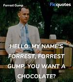

This is my first attempt at using a font color.
I chose the hex color salmon because I am boujee.
Gary fun fact: Pandas poop 50 times a day.
Gary fun fact: The microphone was invented in 1876
Gary fun fact: Bats are the only mammal that can actually fly
This is bold!!
This is italian... I mean Italicized
This is under.lined
